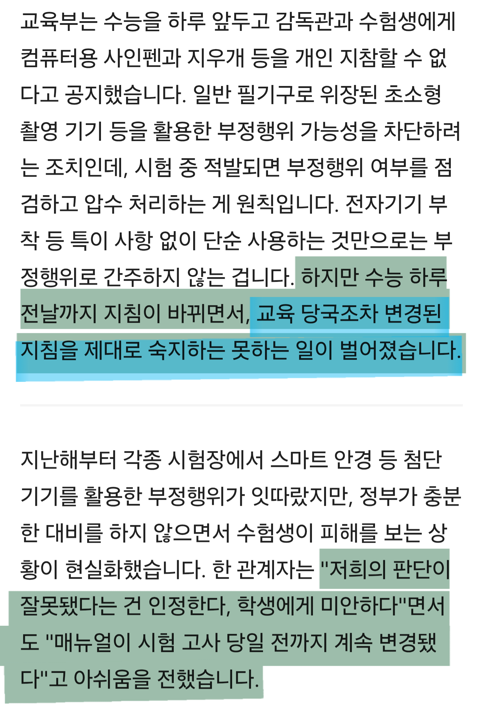
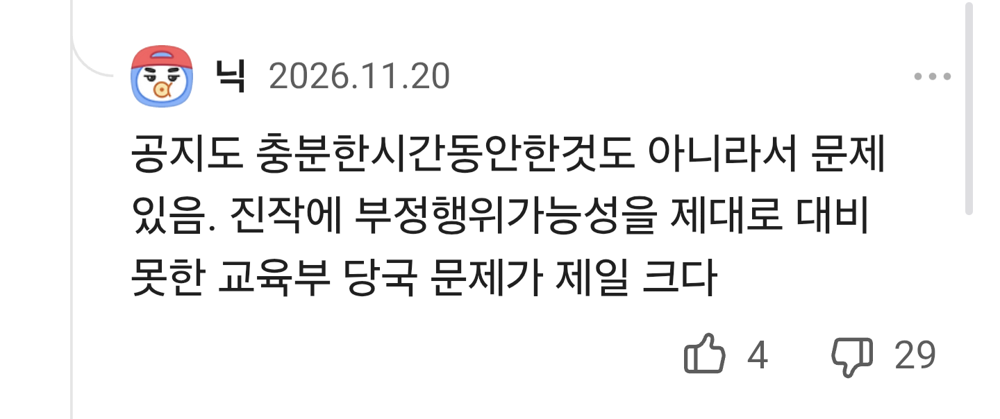
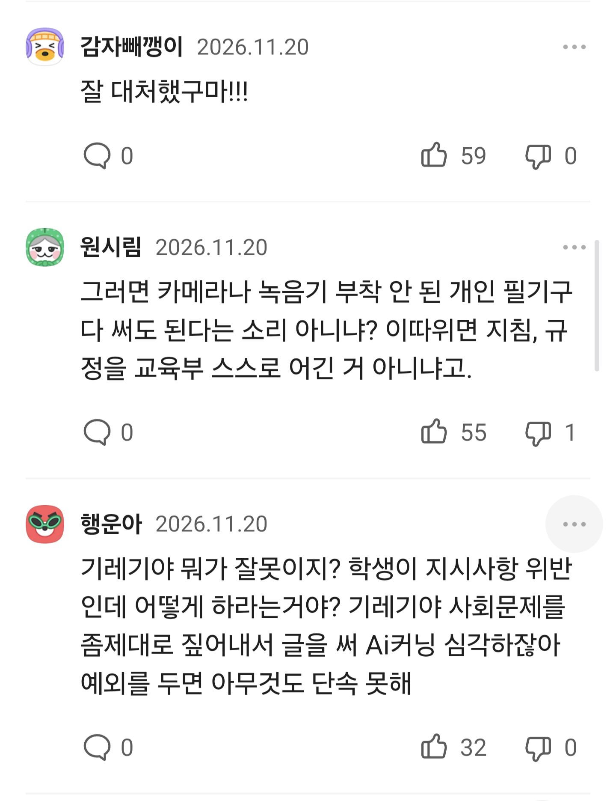
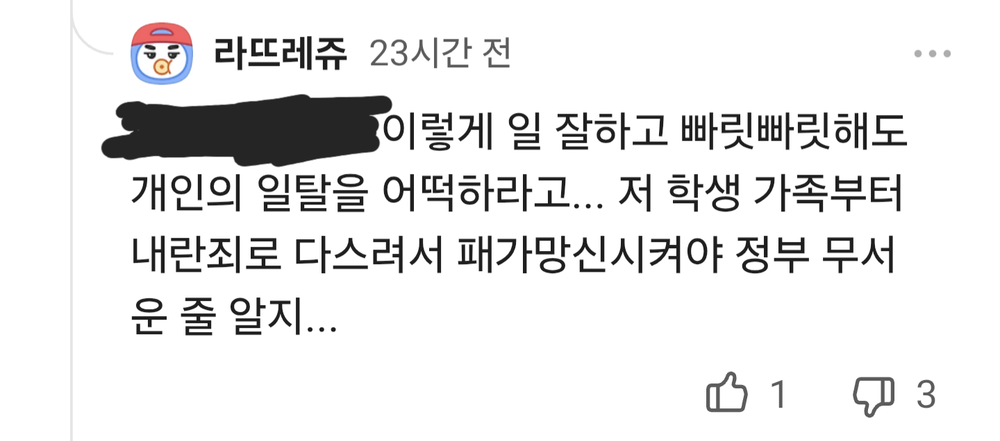

수능 에 개인지참 컴퓨터 싸인펜을 들고오자 부정행위로 잘못 간주하여 퇴실시키는 대참사가 일어남.
그러나 기사 본문에도 이미 나와있다시피, 하루전날까지 바뀐 지침이라서 숙지를 못한건데. 심지어 교육당국에서 제대로 숙지를 못해 학생들이 통보를 못받은 일이 벌어짐. 결국 감독관이 스스로 잘못했다 까지 인정을함.
그리고 스크롤내리다가
다음 댓글 구경하다 상식그이하의 기대를저버린 기괴한반응을 보게됨
댓글 리얼 광기 혐오스러움 주의






분명히 기사글에 교육부 지침전달에 제대로 숙지를 못했다고
써져있고 , 감독관도 인정했음에도 불구하고도.
수험생 잘못으로 몰아가고 , 감독관에게 잘했다며 감싸주고 , 말을안들었다며 글기사 조차 읽지도않고 내리는 늙다리들이 10명중 9명이라는것임.
심지어 기사 읽어놓고도 글쓴 기자에게 비난하며 지시사항위반 했다고만 몰아가며 글 앞부분 을 배제하며 위반으로 몰아가는 거
글중 다시보면 누군가는 맞는말 할지라도 그저 이악물고 비추로 반응을 보일만큼
집단군중의 반응이 제정신이 아님.

하다못해 인민 재판까지 바라는 인간도 존재함.
아니 이건좀...
아무리 이세대들이 못배우고 무식하며 공교육 부재라고 할지언정
무지함이 가져다주는 위험함... 예전에 젊은애들이 문해력박살났다고 욕하는게 생각나던데 공교육 부재세대들이 할말이 못됨.
근데 이글에 좀더 보충으로 추가해서 써놓는다
이글본다고 또 오짇 그세대들만 문제라는건 아님.
기사안에 댓글 할배들 기성세대들은 문제인거도 맞지만
역시나 다른커뮤니티도 혹시나 구경해보니 마찬가지로 심함.
(펨코 , 더쿠 , 여시 눈팅해보옴) ㄹㅇ 이정도면 그세대와 그자식
글 아무도 제대로 안읽는 사람들 태반임. 한결같음
근데 펨코는 보니 지들끼리 여론 대충돌나서 사이버노인정됨
이정도면 국민 모두가 남을 서로서로 인민재판에 미침
저러면 학생은 뭐가 되나.. 1년 어떻게 보상해줌